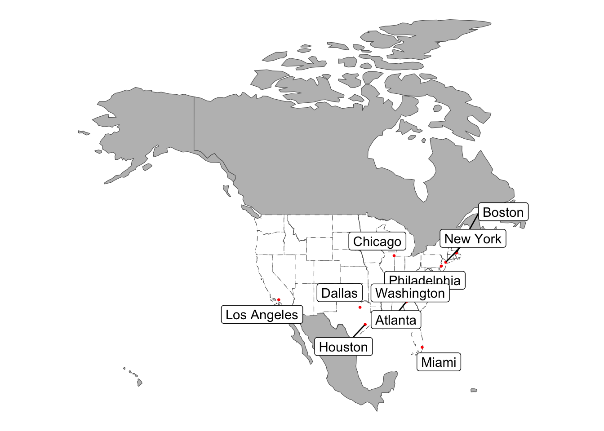
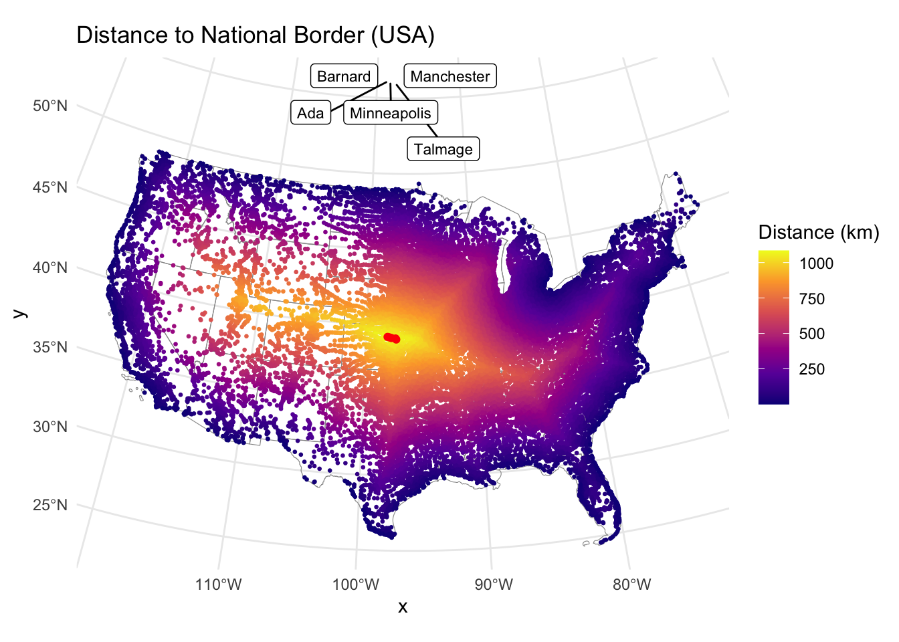
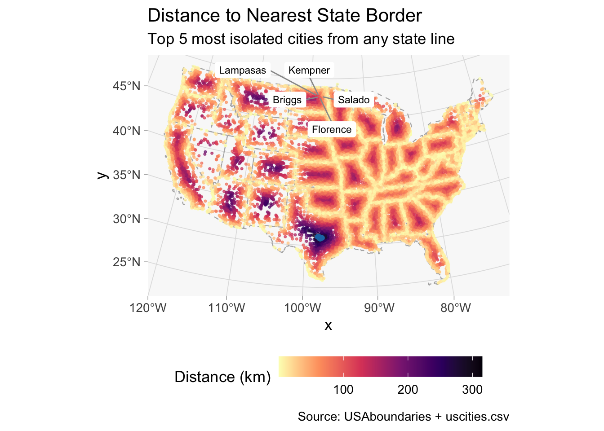
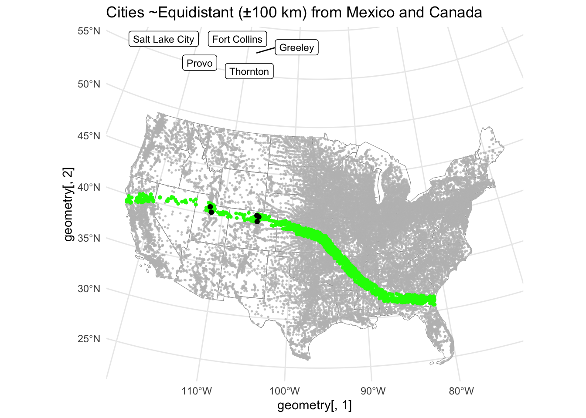
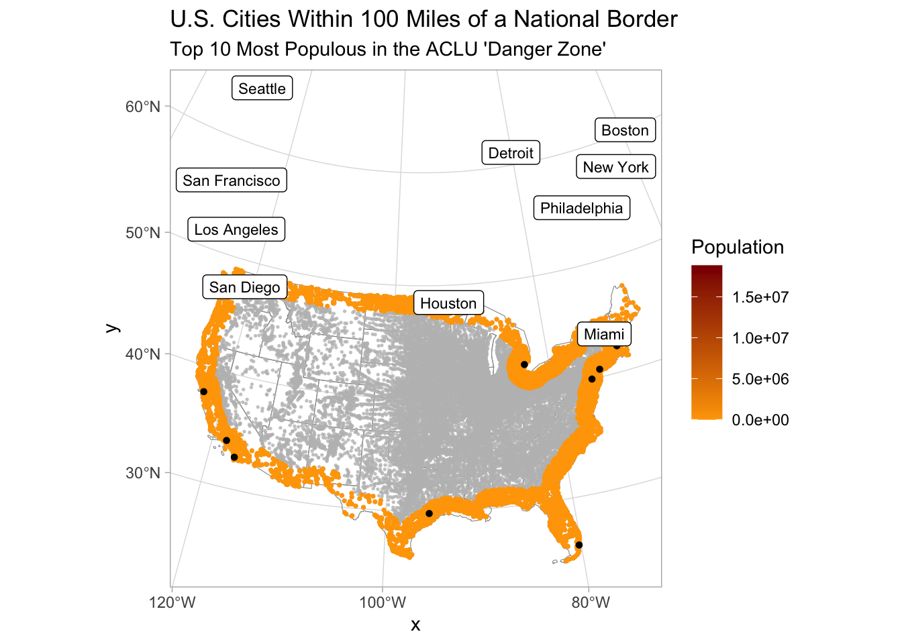

Skipping install of 'AOI' from a github remote, the SHA1 (f821d499) has not changed since last install.
Use `force = TRUE` to force installation
US_boundaries<-data.frame(boundaries_data)
1.2 Get State Boundaries
library(AOI)library(sf)
Linking to GEOS 3.13.0, GDAL 3.8.5, PROJ 9.5.1; sf_use_s2() is TRUE
#Get USA State Boundariesstates <-aoi_get(state ="conus") |>st_transform(crs = eqdc)
1.3 Get Country Boundaries
#Get Country Boundariesnorth_america <-aoi_get(country =c("MX", "CA", "USA")) %>%st_transform(crs = eqdc)
remotes::install_github("ropensci/USAboundaries")
Using GitHub PAT from the git credential store.
Skipping install of 'USAboundaries' from a github remote, the SHA1 (0f56f492) has not changed since last install.
Use `force = TRUE` to force installation
Skipping install of 'USAboundariesData' from a github remote, the SHA1 (064cdbcb) has not changed since last install.
Use `force = TRUE` to force installation
Skipping install of 'rnaturalearthdata' from a github remote, the SHA1 (ff4d891f) has not changed since last install.
Use `force = TRUE` to force installation
Rows: 31254 Columns: 17
── Column specification ────────────────────────────────────────────────────────
Delimiter: ","
chr (9): city, city_ascii, state_id, state_name, county_fips, county_name, s...
dbl (6): lat, lng, population, density, ranking, id
lgl (2): military, incorporated
ℹ Use `spec()` to retrieve the full column specification for this data.
ℹ Specify the column types or set `show_col_types = FALSE` to quiet this message.
The following object is masked from 'package:purrr':
compose
usa_border <- states |>st_union() |>st_cast("MULTILINESTRING") uscities_sf <- uscities_sf |>st_transform(crs = eqdc)# calculate distance from each city to the USA borderuscities_sf <- uscities_sf |>mutate(dist_to_usa_border_km =set_units(st_distance(geometry, usa_border), "km"))# 5 cities farthest from the USA borderuscities_sf |>st_drop_geometry() |>select(city, state_id, dist_to_usa_border_km) |>arrange(desc(dist_to_usa_border_km)) |>slice_head(n =5) |>flextable()
Warning in st_point_on_surface.sfc(sf::st_zm(x)): st_point_on_surface may not
give correct results for longitude/latitude data

3.2 City Distance to Border
# Top 5 farthest cities# Convert units columnuscities_sf <- uscities_sf |>mutate(dist_to_usa_border_num =as.numeric(dist_to_usa_border_km))# Get the 5 cities farthest from national borderfarthest_from_border <- uscities_sf |>slice_max(order_by = dist_to_usa_border_num, n =5)label_data <- farthest_from_border |>mutate(coords =st_coordinates(geometry)) |>mutate(x = coords[,1], y = coords[,2]) |>st_drop_geometry()# Plotggplot() +geom_sf(data = states, fill =NA, color ="gray60") +geom_sf(data = uscities_sf, aes(color = dist_to_usa_border_num), size =0.5) +scale_color_viridis_c(option ="plasma", name ="Distance (km)") +geom_sf(data = farthest_from_border, color ="red", size =1.5) + ggrepel::geom_label_repel(data = label_data,aes(x = x, y = y, label = city),size =3 ) +theme_minimal() +labs(title ="Distance to National Border (USA)")

3.3 City Distance from Nearest State
uscities_sf <- uscities_sf |>mutate(dist_to_state_border_num =as.numeric(dist_to_state_border_km))# Get top 5 farthest from any state borderfarthest_from_state <- uscities_sf |>slice_max(order_by = dist_to_state_border_num, n =5)# Extract coordinates for labelslabel_state <- farthest_from_state |>mutate(coords =st_coordinates(geometry)) |>mutate(x = coords[, 1], y = coords[, 2]) |>st_drop_geometry()# Plotggplot() +geom_sf(data = states, fill =NA, color ="grey70", linewidth =0.4, linetype ="dashed") +geom_sf(data = uscities_sf, aes(color = dist_to_state_border_num), size =0.6, alpha =0.7) +scale_color_viridis_c(option ="magma", name ="Distance (km)", direction =-1) +geom_sf(data = farthest_from_state, color ="#1f77b4", size =1.5) + ggrepel::geom_label_repel(data = label_state,aes(x = x, y = y, label = city),size =3,box.padding =0.4,segment.color ="grey60",fill ="white",label.size =NA ) +theme_light(base_size =13) +theme(panel.background =element_rect(fill ="#f9f9f9"),panel.grid.major =element_line(color ="#e0e0e0", size =0.3),panel.border =element_blank(),legend.position ="bottom",legend.key.width =unit(1.2, "cm") ) +labs(title ="Distance to Nearest State Border",subtitle ="Top 5 most isolated cities from any state line",caption ="Source: USAboundaries + uscities.csv" )
Warning: The `size` argument of `element_line()` is deprecated as of ggplot2 3.4.0.
ℹ Please use the `linewidth` argument instead.

3.4 Equidistant Boundary From Mexico and Canada
# Create variable for absolute distance differenceuscities_sf <- uscities_sf |>mutate(dist_diff =abs(as.numeric(dist_to_mexico_km) -as.numeric(dist_to_canada_km)))# Filter cities within 100 km of equidistanceequidistant_cities <- uscities_sf |>filter(dist_diff <=100)# Top 5 most populous in that zonetop5_equidistant <- equidistant_cities |>slice_max(order_by = population, n =5)ggplot() +geom_sf(data = states, fill =NA, color ="gray60") +geom_sf(data = uscities_sf, color ="lightgrey", size =0.3) +geom_sf(data = equidistant_cities, color ="green", size =0.8) + gghighlight::gghighlight(dist_diff <=100, use_direct_label =FALSE) +geom_sf(data = top5_equidistant, color ="black", size =1.5) + ggrepel::geom_label_repel(data = top5_equidistant |>st_drop_geometry() |>mutate(geometry =st_coordinates(top5_equidistant)),aes(x = geometry[, 1], y = geometry[, 2], label = city),size =3 ) +theme_minimal() +labs(title ="Cities ~Equidistant (±100 km) from Mexico and Canada")
Warning: Could not calculate the predicate for layer 1; ignored

Question 4
4.1 - 100-Mile Border Zone
uscities_sf <- uscities_sf |>mutate(dist_to_usa_border_km =as.numeric(dist_to_usa_border_km),in_border_zone = dist_to_usa_border_km <=160 )# Total number of citiestotal_cities <-nrow(uscities_sf)# Cities in 100-mile zoneborder_zone_cities <- uscities_sf |>filter(in_border_zone)n_border_cities <-nrow(border_zone_cities)border_population <-sum(border_zone_cities$population, na.rm =TRUE)total_population <-sum(uscities_sf$population, na.rm =TRUE)percent_in_zone <- (border_population / total_population) *100library(flextable)tibble(`Total Cities`= total_cities,`Cities in Border Zone`= n_border_cities,`Population in Border Zone`= border_population,`Total Population`= total_population,`Percent in Border Zone`=round(percent_in_zone, 1)) |>flextable()
Total Cities
Cities in Border Zone
Population in Border Zone
Total Population
Percent in Border Zone
30,460
9,813
216,043,045
396,228,558
54.5
4.2 Mapping Cities in 100-Mile Zone
top10_danger_zone <- border_zone_cities |>slice_max(order_by = population, n =10)label_data <- top10_danger_zone |>mutate(coords =st_coordinates(geometry)) |>mutate(x = coords[, 1], y = coords[, 2]) |>st_drop_geometry()ggplot() +geom_sf(data = states, fill =NA, color ="grey60") +geom_sf(data = uscities_sf, color ="lightgrey", size =0.3) +geom_sf(data = border_zone_cities, aes(color = population), size =0.6) +scale_color_gradient(low ="orange", high ="darkred", name ="Population") + gghighlight::gghighlight(in_border_zone, use_direct_label =FALSE) +geom_sf(data = top10_danger_zone, color ="black", size =1.2) + ggrepel::geom_label_repel(data = label_data,aes(x = x, y = y, label = city),size =3 ) +theme_light() +labs(title ="U.S. Cities Within 100 Miles of a National Border",subtitle ="Top 10 Most Populous in the ACLU 'Danger Zone'")
Warning: Could not calculate the predicate for layer 1; ignored

Label Most Populated City in Each State
# Get top city per statetop_city_per_state <- border_zone_cities |>group_by(state_id) |>slice_max(order_by = population, n =1) |>ungroup()label_statewise <- top_city_per_state |>mutate(coords =st_coordinates(geometry)) |>mutate(x = coords[,1], y = coords[,2]) |>st_drop_geometry()ggplot() +geom_sf(data = states, fill =NA, color ="grey60") +geom_sf(data = uscities_sf, color ="lightgrey", size =0.3) +geom_sf(data = border_zone_cities, aes(color = population), size =0.6) +scale_color_gradient(low ="orange", high ="darkred", name ="Population") +geom_sf(data = top_city_per_state, color ="black", size =1.2) + ggrepel::geom_label_repel(data = label_statewise,aes(x = x, y = y, label = city),size =3 ) +theme_light() +labs(title ="Most Populous City in Each State within the 100-Mile Danger Zone",subtitle ="Based on ACLU's Border Zone Interpretation")
Warning: ggrepel: 10 unlabeled data points (too many overlaps). Consider
increasing max.overlaps